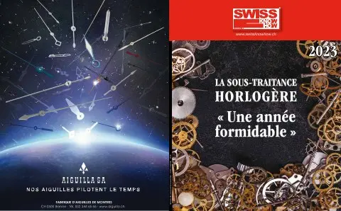

En bref
Le chrome hexavalent, allergène réglementé, peut apparaître dans le cuir longtemps après un tannage au sulfate de chrome. Pour éviter des analyses longues et coûteuses, l'Association pour l'assurance qualité des fabricants de bracelets cuir a mis au point en 2018 un Quick Test : un échantillon agité trois heures dans une solution, puis deux réactifs suffisent. Validé par l'institut italien Po.Te.Co sur 100 échantillons, il affiche plus de 94 % d'homologie avec la méthode ISO 17075-2 ; près de 2000 tests ont été réalisés. Fondée en 2014 par cinq manufactures, l'AQC délivre un label audité par la SGS couvrant chimie, social, bien-être animal et environnement, et cartographie les filières jusqu'à 99 % pour l'alligator.
« Aucune connaissance approfondie n'est nécessaire pour réaliser ce test. »— Gwénaëlle Hildebrand
L'interview intégrale
Traquer la présence de Chrome (VI) est un enjeu majeur pour toute personne travaillant le cuir, notamment pour les fabricants de bracelets de montre en cuir. L’association pour L’Assurance Qualité des Fabricants de Bracelets Cuir (AQC) a donc élaboré un test rapide et fiable. En trois heures, avec des moyens techniques simples, la présence éventuelle de cet allergène est décelée.
Un bracelet de montre en cuir se doit d’être irréprochable tant en qualité de fabrication, qu’en conformité chimique. Or, le cuir peut parfois contenir un élément indésirable : le chrome (VI) ou chrome hexavalent. Cette forme oxydée résulte de l’utilisation du sulfate de chrome pour le tannage.
Le chrome (VI) apparaît parfois longtemps après le tannage, pendant le stockage notamment. Cette substance est réglementée car elle peut provoquer des allergies. Il est donc important de la déceler avant d’utiliser la matière en fabrication.
Un test homologué rapide et simple à réaliser
Les tests en laboratoire pour détecter le chrome hexavalent prennent du temps et sont coûteux. Afin de faciliter et de garantir la conformité chimique du cuir, l’AQC grâce à son savoir-faire a su développer un test rapide et simple. Il suffit de prélever un échantillon de cuir, de le placer dans un tube de solution agité durant trois heures, pour ensuite y ajouter deux réactifs pour connaître le verdict.
« Aucune connaissance approfondie est nécessaire pour réaliser ce test et les seuls équipements additionnels au kit de 6 Quick Tests vendu sur le marché sont un simple agitateur rotatif et une balance. », explique Sébastien Bagot, manager technique et qualité à l’AQC.
Biochimiste et ancien chef de laboratoire, c’est lui qui a mis au point cette solution en 2018. Depuis, près de 2'000 tests ont été effectués par les membres de l’AQC.
L’institut italien spécialisé dans le cuir, Po.Te.Co (Polo Tecnologico Concario), a récemment validé ce test en le comparant à la méthode de référence sur 100 échantillons. Les conclusions de l’homologation démontrent que le Quick Test AQC est très fiable : plus de 94% d’homologie avec la méthode accréditée ISO 17075-2. Un vrai succès.
Association des fabricants des bracelets cuir
Ce n’est là qu’un des services que l’AQC propose.
Elle a été fondée en 2014 par cinq manufactures représentant plus de 80% de la production mondiale de bracelets cuirs haut de gamme. Des concurrents qui ont réussi à se réunir pour créer un véritable centre de compétences avec comme objectif de faciliter la traçabilité et la conformité chimique du bracelet cuir. L’association est basée à Neuchâtel, au centre de gravité de l’industrie horlogère.
Traçabilité en toute transparence
Une autre mission de l’AQC : la cartographie de la chaîne d’approvisionnement des maisons membres, en partant des bracelets livrés aux maisons horlogères clientes, pour remonter jusqu’à la ferme ou au pays d’élevage. Au fil des années, la transparence a été de plus en plus acceptée par les acteurs du secteur, jusqu’à obtenir 99% de couverture pour les cuirs d’alligator et plus de 80% pour les cuirs de bovin.
Les membres de L’AQC se sont également accordés pour être audités tous les deux ans par un organisme indépendant (la SGS) qui évalue si les bracelets fabriqués peuvent recevoir le label AQC selon les référentiels de l’association.
Un standard qui couvre, en plus de la conformité chimique, les aspects sociaux, le bien-être animal, l’environnement et les systèmes de traçabilité.
Texte paru dans Swiss Knowhow – Horlogerie 2023 : la sous-traitance horlogère, p. 9.
Personnes citées
- Gwénaëlle HildebrandDirectrice de l'AQC
- Sébastien BagotManager technique et qualité

Paru dans
Swiss Knowhow – Horlogerie 2023 : la sous-traitance horlogère
2023 · page 9 · article original en français
Lire l'article complet PDF